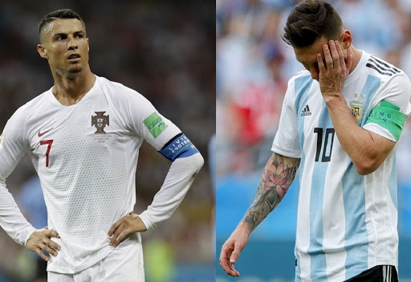

(2017.10.07 롤드컵 그룹 스테이지 2일차 skt vs edg 경기중 벌어진 한타)
먼저 현 상황에 대해서 간략하게 집고 넘어가보자면
현재 티어는 실버 1이다.
처음 시작할때 티어는 실버 2였다.
일주일간 랭크게임을 계속 돌렸음에도 한계단밖에 오르지 못한것이다.
한번 골드 승격전에 도전했었지만 2승 3패로 실패하고 다시 실버 1의 늪에서 헤어나오지 못하고 있는 중이다.
앞서 말했듯이 플레티넘이라는 티어가 결코 낮은 수준의 티어는 아니다.
객관적으로 생각해봐도 상위 9%라는 뜻이기 때문이다.
그리고 골드티어의 전체 유저 중 지분율은 22%이다.
실버 1 차치하고서라도 내 위에 있는 22%의 골드티어 유저들을 이기고 올라서야 플레티넘에 도달할 수 있다는 이야기이다.
티어를 올리는데 있어서 넘어야 할 장애물들을 몇가지 이야기 해보려 한다. 현재 나에게 가장 어려운 부분은 주는 부분은 첫째로 피지컬(physical)부족이다. 롤에서 이야기하는 피지컬이란 유저 한명의 개인기량이라고 생각하면 된다. 내가 생각하기에 지금 티어를 올리는데 있어서 가장 큰 장애물은 피지컬의 부족이다.
이해하기 쉽도록 축구로 예를 들자면, 축구선수 개인의 개인기술, 개인기량 같은 것이라고 생각하면 된다. 축구의 승패를 가르는데는 감독의 전술과 전략, 부분전술, 멘탈리티 심지어는 양 팀의 실력이 비슷비슷할 경우 그 날의 운이 승부를 결정짓기도 한다. 마찬가지로 롤에서도 게임 전체를 운영하는 운영법과 전술, 전략, 부분전술이 있지만 1:1 대결에서의 (혹은 1:다 의 경우도 생각해볼 수 있다) 한번의 승부가 경기를 결정짓는 순간이 되기도 한다. 나는 이 부분에서 약점이 있다고 생각한다. 그래서 계속해서 라인전에서 밀리고 중반, 후반으로 넘어갈 수록 영향력에서 차이가 난다고 생각한다.
물론 피지컬이 없다고 해서 티어를 올릴 수 없다고 생각하지는 않는다. 똑같이 축구로 예를 들자면 월드컵에서는 항상 이변이 생긴다.
약팀이 강팀을 잡고, 강팀은 심지어 조별리그에서 탈락하기도 한다.
개인기량으로 승부가 난다면 역대 최고의 축구선수라고 이야기하는 메시나 호날두가 속해있는 아르헨티나, 포르투갈이 월드컵 우승컵을 들어올려도 몇번은 들어올리지 않았겠는가? (그러나 모두가 알다시피 한번의 우승컵도 들어올리지 못했다.)
이와같이 롤에서도 피지컬은 중요한 요소이지만 오롯이 승부를 결정하는 요소는 아니다.
그러므로 나는 이 장애물을 다른 강점으로 극복하고 티어를 올릴 수 있다고 생각한다.

두번째로는 크게 중요하다고 생각하지 않지만 장비이다. 물론 장비가 나의 티어를 결정하는 것은 아니다. 하지만 가끔씩 한타를 할때에 끊키는 현상이 생긴다.
한타(teamfight)란, 5:5 팀대 팀으로 한방 크게 맞붙는 것을 말한다. 한타에서는 방금전에 내가 언급했었던 피지컬은 당연히 중요할 뿐더러 챔피언간의 상성과 조합의 장단점이 승패를 좌우한다.
한타를 잘 싸우는 경우 성장에서 크게 차이가 난다고 할지라도 승리를 가져올 수 있다. 반대로 아무리 앞서고 점수를 많이 따놓았다고 하더라도 충분히 질 수 있는 대결이다.
이런 중요한 싸움을 할때 게임이 끊켜버리니 한두게임 정도는 승패에 지장을 주었다고 생각한다.
그러나 장인은 도구탓을 하지 않는다고 하더라.. 나는 장인이 아니기때문에... 여튼
(2017.10.07 롤드컵 그룹 스테이지 2일차 skt vs edg 경기중 벌어진 한타)